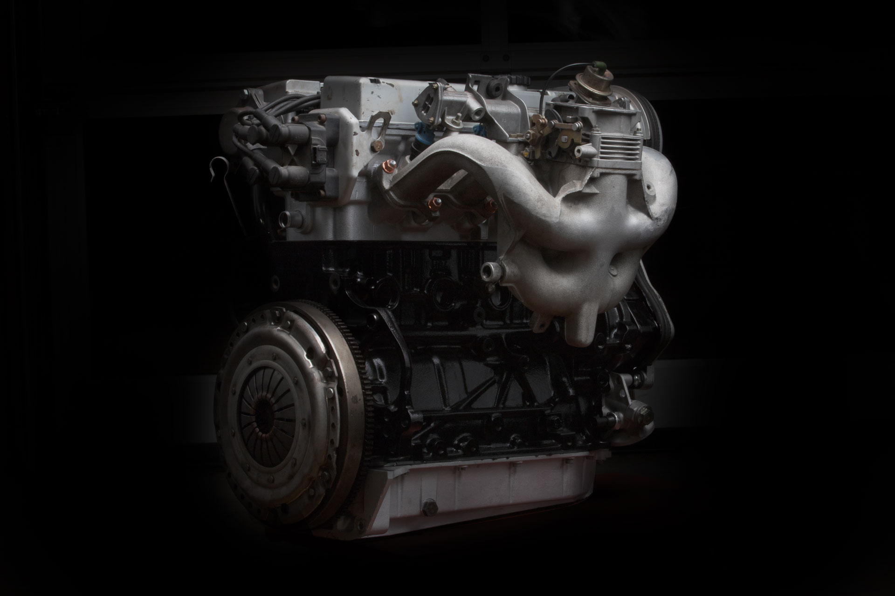
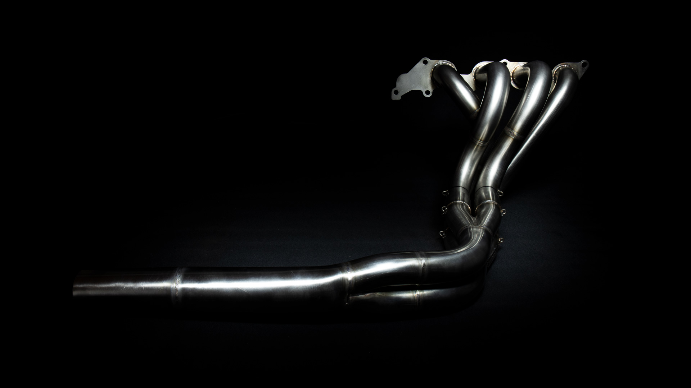

Ford Duratec COSWORTH
El Ford Duratec es un motor de 4 cilindros en linea de originalmente de 2 Litros de cubicaje
de aspiracion con cadena de distribucion y doble arbol de levas.
Para ofrecer una experiencia unica en la conduccion al volante de un Caterham el motor Duratec de
Ford ha sido modificado por Cosworth.
Cosworth ha reforzado los componentes internos, montando bielas y pistones forjados y un
cigueñal de perfil bajo para aumentar la cilindradaa 2,4 litros, entregando una potencia de
280CV.
Este es el motor de aspiracion natural mas potente que se monta en un Caterham y sin duda es
la opcion que todo entusiasta de los trackdays elije.
Nosotros ofrecemos una linea de escape completamente hecha a medida y artesanal del fabricante
de escapes italiano Pietro Fasoli, siendo esta linea de escape de alto rendimiento el complemento
perfecto para este motor.
PRECIO: 22500€

Opel C20XE
Conocido por su robustez y su capacidad de ser modificado el ya mitico motor C20XE de Opel fue
hace años montado de fabrica por Caterham en sus modelos mas potentes. Aunque ha quedado
descatalogado y Caterham ya no lo monta mas de serie en sus vehiculos sigue siendo una de las
opciones preferidas por los puristas y apasionados de la marca ya que entrega mucho par y potencia
a un precio reducido.
Este motor se montaba turbado en el Opel Calibra por lo que montarlo en un vehiculo de 700 kg
como es un Caterham hace que el ratio potencia/peso sea algo muy por encima de la media.
PRECIO: 12500€

Linea de escape Pietro Fasoli
Linea de escape hecha por el fabricante italiano Pietro Fasoli.
Pietro Fasoli lleva mas de 20 años dedicandose a la creacion de escapes para competicion
y tambien para calle con homologacion. Su experiencia es amplia y ha desarrollado lineas de escape
para motos y coches desde vehiculos con prestaciones moderadas hasta clasicos legendarios como algunos
modelos italianos de los 80s de fabricantes como Ferrari y Lamborghini.
Esta linea de escape es el complemento perfecto para tu Ford Duratec si quieres sacar unos
caballos de potencia extra a tu unidad de potencia y ademas un sonido unico y rabiante.